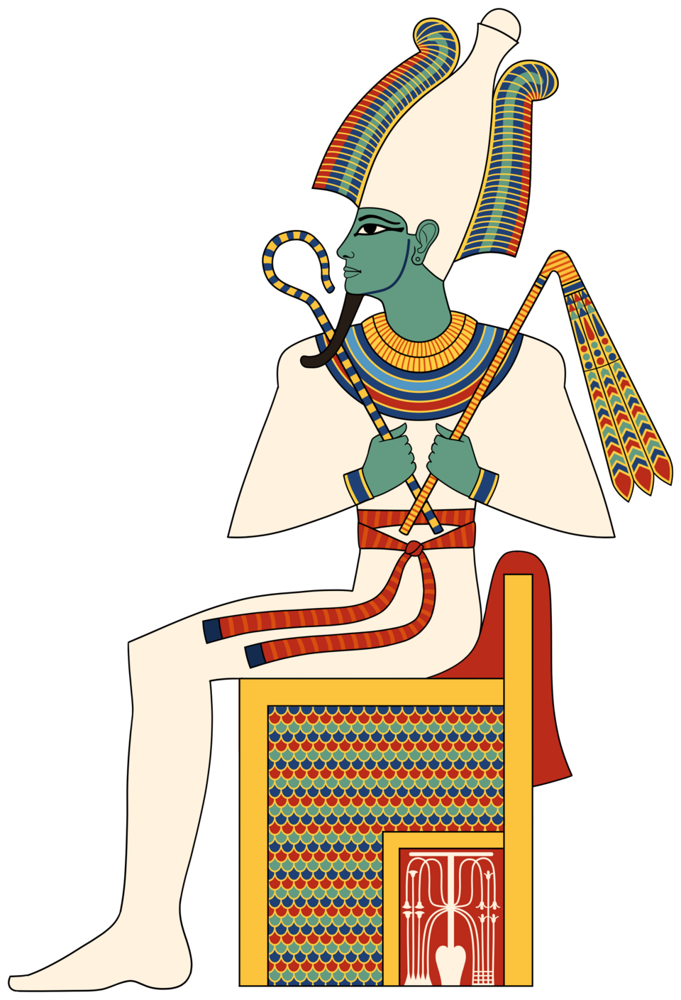

Происхождение и образ
Осирис (егип. wsjr, греч. Ὄσιρις) — бог воскресения, владыка загробного мира и судья душ усопших в мифологии Древнего Египта. Он был старшим из «священного приплода» бога земли Геба и богини неба Нут и вместе с сестрой-близнец Исидой стал центром главного мифа Египта. Вчетвером — с братом Сетом и сестрой Нефтидой — они составили семью, чья история — убийство, горе вдовы и тяжба — на три тысячи лет определила лицо египетской религии.
Согласно гелиопольской традиции, Осирис был четвёртым богом, царствовавшим на земле в изначальные времена: после Ра, Шу и Геба он унаследовал трон Кемета. Та же традиция рассказывала, что этот первый царь создал цивилизацию: он научил людей религии и земледелию, пахоте и выращиванию виноградной лозы и положил конец варварству. В таком облике он — царь-культурный герой, родственник по мотиву скандинавскому Одину, но судьба у него иная: ему суждено умереть и царствовать уже в смерти.
Именно культ Осириса разрушил монополию фараона на вечность. С его смертью и воскресением каждый человек, прошедший суд, мог стать «Осирисом» — в погребальных текстах умершего прямо обращали по имени бога. Похоронные книги называют его «Владыкой Молчания»: его тишина — тишина могилы и тишина того, кто выносит окончательный приговор. С конца Древнего царства судейской должностью завладел он сам, перехватив у Анубиса титулы «владыка запада» и «владыка тех, кто на западе», — и с этого момента Осирис стал лицом загробного мира для каждого, а не только для царя.
Иконография
Осирис изображается в виде, уникальном среди богов Египта, — мумией: тело его обвито белым льном, лицо — зелёное, а кисти рук выведены из пелен и сжимают хекет и нехех — посох и цеп, знаки царской власти. Зелёный — цвет плодородной нильской илы и камыша, цвет возобновления: умерший царь не разлагается, а словно всходит. Иногда лицо делают тёмным, почти чёрным, — в цвет жирной земли, из которой снова вырастает жизнь.
На голове у него корона атеф — двойной пышный убор с солнечным диском, сотканный из стеблей папируса. Папирус был его священным растением: из него строили его ладью, в его зарослях пряталась Исида с младенцем. Рядом с богом или в его руках — столб джед: связка жердей, «позвоночник Осириса», символ стойкости и воскресения; обряд «установления джеда» был одним из главных актов фестиваля в Абидосе — подтверждением того, что мир стоит, как стоит джед.
Осирис никогда не бывает «голым» от растительности: из пруда перед его престолом растёт лотос, вокруг — роща деревьев, а балдахин над его головой увит гроздьями винограда, иногда лозы обвивают и самого бога. Это не украшение, а теология — бог зерна, разлива и цикла смерти-возрождения, вписанный в собственный образ.
Культ и мифы
Миф об Осирисе — центральный миф египетской религии. В древнейших версиях, записанных в «Текстах пирамид», Сет рассердился на брата из-за подставленной подножки; поздние версии разрастались в целую интригу: пышное угощение на празднике, искусно сделанный саркофаг, который обещали в дар тому, кому он окажется впору. Осирис лёг внутрь, заговорщики (по одной версии — семьдесят двое) захлопнули крышку, заколотили её и бросили сундук в Нил..
Течение реки унесло саркофаг за пределы Египта. В поздней версии сундук выбросило к сирийскому побережью, к городу Библ, где вокруг него проросло дерево, и правитель города повелел срубить ствол и поставить его колонной во дворце. Исида, услышав о гибели мужа, остригла волосы, облачилась в траур и отправилась искать тело; с Нефтидой их изображали в облике сокола и коршуна — птиц, которые кричат, как плачущие, и летают на огромные расстояния. В болотах близ Буто женщины спрятали тело мужа и оплакивали его; в Новом царстве верили, что эти рыдания и есть вода нильского разлива.
Сет нашёл тело брата и разрубил его — в разных версиях от 14 до 42 частей, по числу номов Египта, — и разбросал по стране. Исида собрала части тела супруга — с помощью Анубиса или Тота, — и Анубис забальзамировал умершего царя: так появились первая мумия и сам обряд мумификации, которым Египет будет пользоваться ещё три тысячи лет. Воскресший ненадолго Осирис зачал Гора и не остался на земле: он предпочёл царствовать над мёртвыми, уступив земной трон сыну.
Зал Двух Истин и Осиреон
В раннее время судьёй мёртвых в Дуате был только Анубис, но с конца Древнего царства эту должность занял Осирис. Сцена суда — «великие весы» — впервые попала на папирусы «Книги мёртвых» в начале XVIII династии: на одну чашу клали сердце покойного, на другую — перо богини Маат, истины и порядка. Если сердце оказалось тяжелее, чудовище Аммат пожирало его — вторая, окончательная смерть; если нет, душа входила на поля Иалу — в вечные «тростники» счастливого загробного бытия. Зал, где всё это происходило, называли Залом Двух Истин — потому что на весах встречались две истины: правда жизни покойного и вечная правда Маат.
Главным центром культа стал Абидос (Абджу) в Среднем Египте, где, по вере, покоилось тело бога: люди стремились получить погребение хотя бы на его окраинах. Здесь возводили Осиреон — особое сооружение для мистерий Осириса, где хранили модель священной ладьи бога и разыгрывали обряд его воскресения. Вокруг храмов высаживались 360 или 365 деревьев — как символ изменяющегося времени и года; в ритуальных целях использовали полые деревянные футляры в виде мумии Осириса: внутрь насыпали землю, бросали зерно и сверлили дырки в крышке, сквозь которые пробивались зелёные всходы. Этот «Прорастающий Осирис» был живым доказательством цикла: зерно умирает и всходит, бог умирает и воскресает.
Цикл связывал Осириса с землёй: сеяние зерна — его похороны, всходы — его воскресение, жатва — новое убийство; так бог зерна жил в каждом колосе. Смерть, горе вдовы и тяжба сына стали предметом религиозных драм на великих фестивалях года — и три тысячелетия этот миф оставался главным в жизни египтян, от жреца до пахаря.